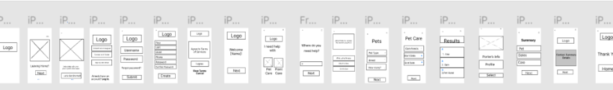

Overview
THE PROBLEM: While researching common painpoints experieinced by people while traveling we came across the common issue of
users needing to organize their homelife before travel. Travelers are faced with the prospect of leaving their
pets and plants behind at home while they are out of town.
THE SOLUTION:
This app aims to decrease the anxiety that travelers face when needing to leave behind their pets and plants
while they travel by connecting users to an online marketplace for pet and plant care.
Research
When first approaching this problem, I realized I had to have a better understanding of the users and
stakeholders.
I conducted five interviews to get detailed notes and experiences that can provide me with more insight on how
my app can help potential users.
After careful stakeholder exploration and interviews, I created a user persona to think about as I went into the
brainstorming phase of the project.
I wrote down the most important quotes from my user interviews and structured them down in synthesis using
Figma. When I was done I came up with themes & patterns for my product and card sorted the notes from the
synthesis, focusing on travel painpoints.
Competitor analysis:
I took a moment to survey the playing field. Who are our competitors and what do they do well, and not so well?
I researched features that direct and indirect competitors offer and analyzed the findings to discover what I
could improve on and how.
For the analysis there was a focus on the signup and onboarding flows because these two processes are imperative
for a successful user experience.
Prototyping & Usability Testing
To visualise the final product I sketched possible solutions. I then created wireframes in Figma. Ultimately, I
came up with an app that would have multiple ways to register, coaching screens for new users and would work
more like an online marketplace for pet or plant care needs.
User testing was performed after every reiteration.

Conclusion
I’ve learned a great deal during this case study.
It’s important to spend time in the initial interviews to really understand users’ pain points. It would be wise
to spend time creating clear objectives and questions. If I had the opportunity to go back, I would have spent
more time interviewing more pet and plant parents.
It is also crucial to focus on just one problem. When discussing user pain points it's very easy to get caught
up in several different problems. When creating a product it's important to not lose sight of your actual goal.